合計コストは増えたが、単位コストはほぼ同じ
まず、アクティブユーザー数、セッション数、リクエスト数を確認します。観測されたアクティビティが増えれば、単位あたりの結果が悪化していなくても、合計が増えることがあります。
Claude Code + Codex · ドキュメント
まず、1つの調査から始めましょう。スクリーンショットを見ながら進めたあと、メニューのリファレンスで利用可能なすべての操作と、クライアントごとの詳細を確認します。
機能はインストール環境、権限、収集データによって異なります。このガイドでは各操作を説明し、韓国語が基本の画面で確認できるラベルを併記します。v1.8.0 のソースを基準に確認しています。
ユーザーのコスト、トークン量、またはツールのアクティビティを詳しく調べる場合は、この手順を使います。タスクリストは、トレースされたアクティビティの一部です。そのため、まずユーザーの使用量合計を確認し、次に利用可能なタスクの証拠を調べます。
Usersを開き、クライアントを選択して、対象の作業を含む期間を設定します。識別済みのユーザー行を選択すると、사용자 상세が開きます。カードやグラフを比較する前に、適用期間の行を確認してください。Claudeの詳細では、ユーザー詳細に有効なすべてのクライアントが含まれる場合があります。推定されたチャネルのフィルターは、Claude関連の領域にのみ適用されます。推定されたチャネルはクライアントでもログイングループでもありません。
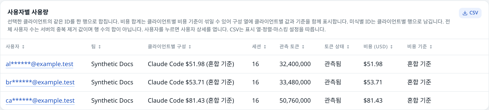
ユーザーの使用量／コストのグラフ上をドラッグし、調べたい期間を選びます。ページの期間とタスクリストが一緒に絞り込まれます。点をクリックすると、代わりに1つの時間バケットが選択されます。点の選択を解除するには전체 조회 기간의 작업を使います。ドラッグで選択した範囲を広げるには、ページの期間をリセットします。
작업 목록 · 상위 20개で、トークン、コスト、サブエージェント、または所要時間を比較します。ワークフローのバッジを選択すると、その実行だけに絞り込めます。コストの高いタスクを選ぶ前に、コスト算定根拠のバッジを確認してください。Claudeのコスト順の並べ替えは、トークン数が最も多い100件の候補に限られる場合があるため、上位20件がコスト監査の全件を網羅するとは限りません。
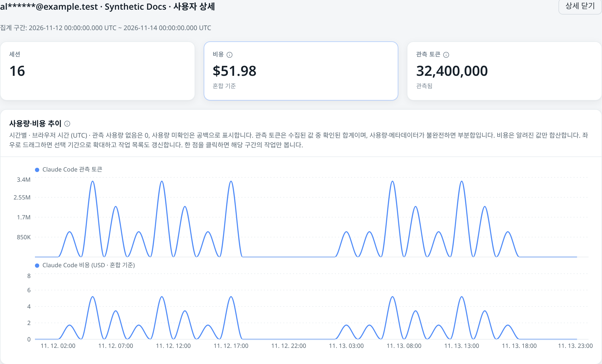
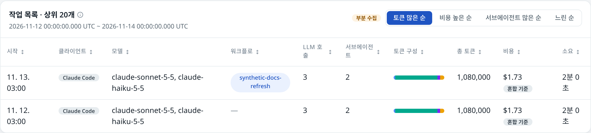
タスクを開きます。トークンの小計、コスト算定根拠、呼び出し回数、所要時間を確認し、メインレーンと観測されたサブエージェントをたどります。同じ種類のエージェントが繰り返し現れる場合も、それぞれ独立した番号付きレーンとして表示されます。バーの幅は観測された所要時間を表し、LLMのバーが濃いほど入力コンテキストが大きいことを示します。灰色のバーはツール、赤いマークは権限の待機、破線は観測されたエージェントの起動を示します。

LLM、ツール、または待機の区間をクリックします。サイドパネルには、選択した対象で利用可能な属性（モデル、トークンの内訳、タイミング、コスト算定根拠、ツールまたは権限のメタデータ）が表示されます。欠落している属性は미수집のままです。
attemptを利用できるのは、Claudeのスパンにその情報が含まれる場合だけです。値がないからといって、試行が1回だった、または再試行が0回だったという意味にはなりません。Codexでは、このフィールドは提供されません。この画面には生のプロンプト、コマンド、パスは表示されません。内容の監査を完全に行える画面ではありません。
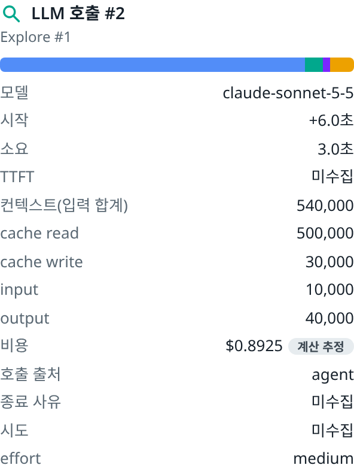
累積コストの帯にポインターを合わせて、レーンごとの寄与を比較します。次に、コンテキストのグラフと왜 많이 썼나の観測結果を確認します。모델별 호출の行を選択すると、対応するLLMバーが強調表示されます。もう一度選択すると、強調表示が解除されます。強調表示で変わるのは表示上の強調であり、タスクの合計ではありません。次に何を調べるかを決める前に、大きなコンテキストの繰り返し、特定レーンの大きな寄与、コストの高い呼び出し、記録された待機がないかを確認します。
세션 환경には、観測されたClaude MCPのステータスと読み込まれたプラグインが表示されます。これらはセッションの観測情報であり、呼び出しごとのツール一覧ではありません。タスクと期間の境界を保持するには、タスクのリンクをコピーします。リンクの受信者にもアクセス権が必要です。Codexの完了数には、コストの帯に対応するサンプリングスパンがない関連レコードが含まれる場合があります。
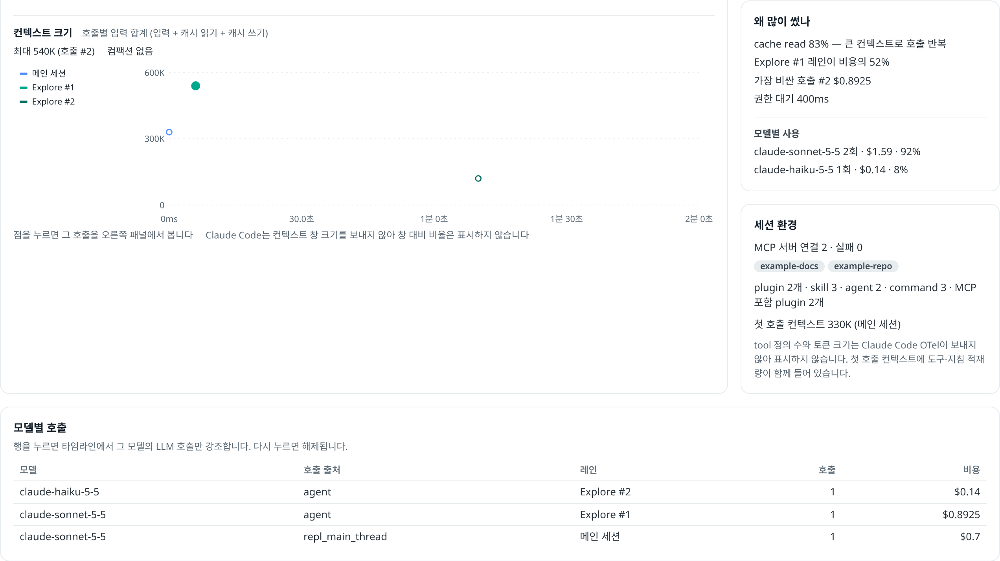
タスクが見つからない場合や不完全な場合：ユーザーの識別情報、期間、トレースの設定、90日間の保持期間を確認してください。詳細は最新の5,000スパンに制限されます。切り詰められたビューでは、必要に応じてタスク全体の概要が非表示になります。トレースに表示されないことは、アクティビティがなかった証拠にはなりません。
比較可能な期間とコスト算定根拠から始めます。合計からモデルまたはユーザーへと絞り込み、トークンの内訳とトレースされた作業を使って、観測された変化を理解します。
クライアント、バックエンド、期間を選びます。表示されている適用期間の境界を確認し、Trendsで同じ長さの期間を比較します。Costでは、報告されたClaudeの支出、Anthropic以外のClaudeまたはCodexの推定支出、混在または一部のみの小計を区別します。価格がない場合、その値は引き続き利用不可です。表示されたコストはいずれも請求書ではありません。
モデル別とユーザー別の内訳を使って、変化の要因を探します。対応している場合は、モデルを選択してそのモデルのユーザーを調べるか、ユーザーを選択して該当期間の詳細を表示します。モデル内のユーザー別割合は、既知のモデルコスト小計を分母に使います。既知のコストに占める割合では、価格が未設定の観測データは考慮されません。
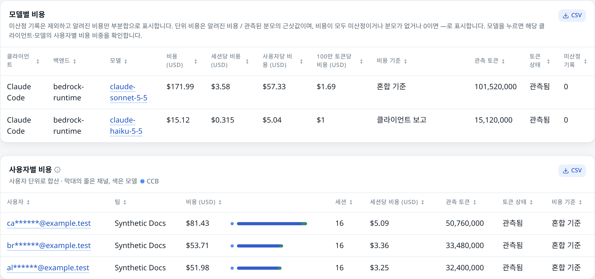
Productivityを開きます。セッションターンのデータが準備できている場合、비용 방정식では、アクティブユーザー数、ユーザーあたりのセッション数、セッションあたりのターン数、ターンあたりのリクエスト数、リクエストあたりのトークン数、トークン単価が関連付けられます。まず、計算に一致したセッション数と、除外された観測データを確認します。この計算式が表すのは、その条件を満たした対象集団です。
드라이버 분해を使い、観測されたコスト差に対する各要因のプラスまたはマイナスの寄与を確認します。前の期間と現在の期間の合計を、要因の合計と比較します。トークン数／リクエストや単価が下がっていても、ユーザー数やセッション数の増加によって支出が増える場合があります。画面上の낭비という分類は、選択された要因に付けられた会計上のラベルであり、特定のユーザーやリクエストが無駄だったという証拠ではありません。

ユーザー／セッション／リクエストあたりのコストと、リクエストあたりのトークン数を確認し、その後、モデルのコスト特性と、利用可能なキャッシュや推論の割合を比較します。各指標の説明とデータの網羅範囲を確認してください。観測されたトークンの小計と、比率に使われる完全な構成要素は、同じ意味ではありません。単位コストのグラフでは、破線が利用不可の期間をまたいで観測済みの端点をつなぐことがあります。その区間のコストが測定されたことを示すものではありません。
該当するユーザーを開き、トレースされたタスクをコスト順に並べ替えます。モデルの変更、繰り返されるコンテキスト、キャッシュの観測結果、ツールのアクティビティ、記録されたエラーや再試行を比較します。こうした観測結果は、プロンプトやワークフローを見直す際の手掛かりになりますが、コスト削減の因果関係、コードの品質、従業員の生産性を証明するものではありません。実際にワークフローを変更した後は、同じ範囲をもう一度確認します。
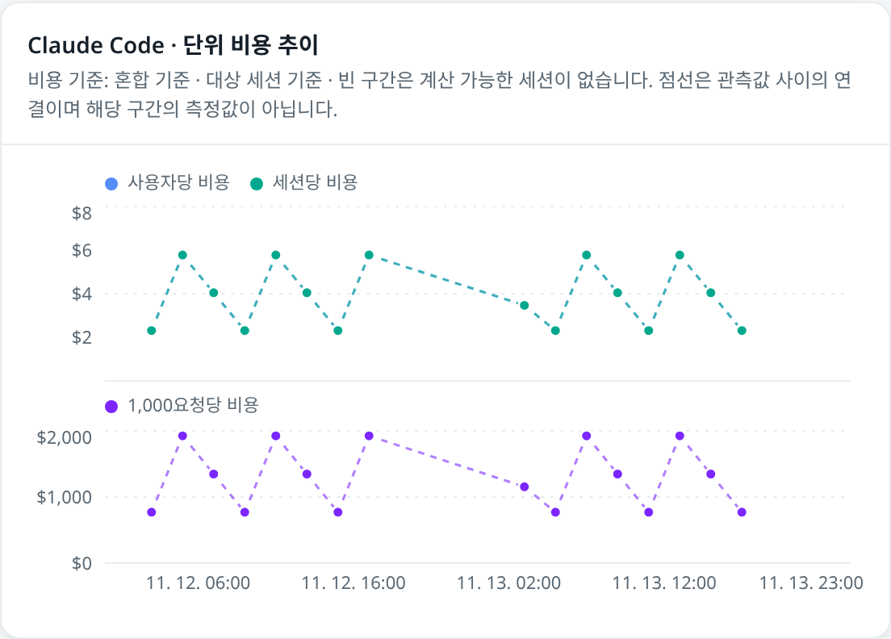
まず、アクティブユーザー数、セッション数、リクエスト数を確認します。観測されたアクティビティが増えれば、単位あたりの結果が悪化していなくても、合計が増えることがあります。
利用可能であれば、モデル構成、effort／speedティア、コンテキスト、キャッシュの内訳を確認します。対象集団が一致していることを確かめてから、代表的なタスクを開きます。
ツールのアクティビティは、作業がどのように行われたかを理解する手掛かりになります。呼び出されたツール、権限の判断、その結果、セッションで読み込まれた環境を区別してから、件数を比較します。
共有のUsageで、トークンの内訳と、クライアントごとに利用可能なツールのアクティビティを比較します。クライアントと期間は同じに保ちます。Claude固有のツール、MCP、Skillのセクションを確認するには、Claude CodeとClaude 상세 보기を選択します。クライアントが提供しないシグナルは、ゼロではなく利用不可として扱われます。
収集されている場合は、ツール名、件数、失敗、タイミングを比較します。読み取り／検索、編集、シェルの実行、エージェントの呼び出しといった一般的な操作を区別します。呼び出し回数が多いからといって、自動的に良い、または悪いとは限りません。タスクと、同じ操作が繰り返されていないかを調べてください。権限の承認と、実行の成功は別々の観測事項です。
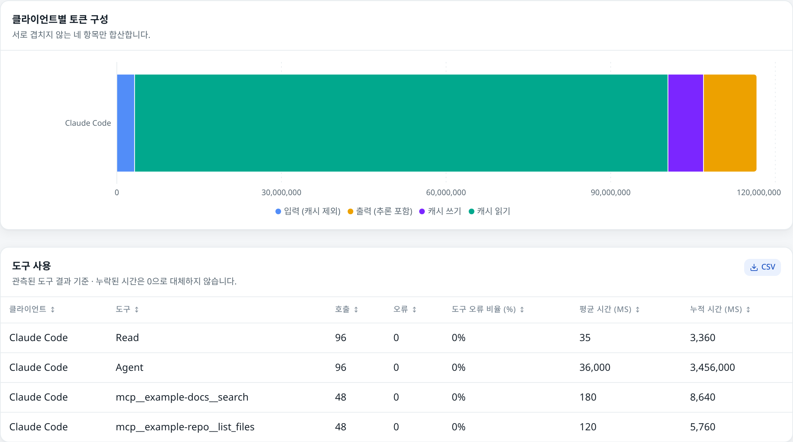

観測されたMCPサーバーとツール名を確認します。セッション環境に接続済みのサーバーが表示されていても、確認できるのは接続の観測結果です。そのサーバーが提供するすべてのツールが実行された証拠にはなりません。失敗のステータスは調査の手掛かりであり、コストやタスクの失敗を完全に説明するものではありません。MCPイベントが欠落していると、このビューに何も表示されないことがあります。
利用可能なSkillの呼び出しと帰属に関するテーブルを確認します。読み込まれたプラグインの件数と、それに関連するセッションの観測情報は別々に確認してください。プラグインが読み込まれたことは、プラグインに含まれるすべてのSkillやコマンドが実行されたことと同じではありません。また、Skillに帰属するコストは、総支出に加算する別の金額ではありません。
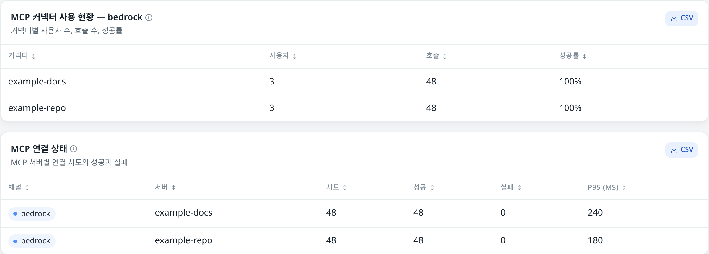
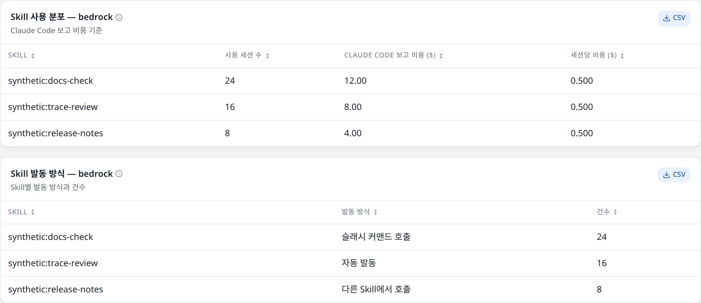
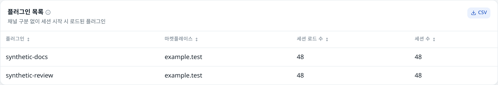
UsageとProductivityで利用可能な権限モード、承認元、ツール結果のセクションを使います。自動承認の件数は、コードの受け入れ率ではありません。拒否された判断、実行エラー、権限待ちをそれぞれ別の段階として比較し、各テーブルに記載された対象集団を確認します。
Usersでユーザーと該当期間を開き、利用可能なTask Traceのツールと待機のスパンを確認します。ツールのメタデータ、観測された所要時間、親／エージェントの配置を読み取ります。モデルの呼び出しとコンテキストのビューを使って、ツールのアクティビティをLLMのアクティビティと関連付けます。スパンのパネルには、生のコマンド、プロンプト、パスは表示されません。
テーブルが空の場合：クライアント、時間、フィルターが適用される条件、データ収集のバージョンを確認してください。シグナルがないことは、ツールが一度も使われなかった証拠ではありません。Codexの診断メトリクスとトレースは、完了ログの使用量合計とは別です。
データの収集とダッシュボードへのアクセスには、それぞれ異なる経路を使います。この図は、任意のデバイス収集経路と、認証された読み取り経路を示しています。主催者が準備するワークショップでの収集には、別途設定された経路を使う場合があります。

Claude CodeとCodexは、対応するシグナルをローカルのCollectorにエクスポートします。登録済みのデバイスは、認証済みの取り込みゲートウェイと中央のCollectorを経由して、ClickHouseにデータを送信します。デバイスの認証情報は、ブラウザーへのログインとは別です。
組織のログインによって、設定済みのロールが適用されます。APIは、使用量と診断のビューを返す前に、時間、クライアント、および対応するフィルターを適用します。コスト算定根拠とデータの網羅範囲を確認してください。画面には、既知の小計が表示される場合も、シグナルが利用できないことが表示される場合もあります。
このダッシュボードは、有効化された Claude Code および／または Codex クライアントから送信されたテレメトリを要約します。観測された使用状況、推定または報告されたコスト、アクティビティ、診断情報を調べるのに役立ちます。請求書を表示するものではなく、従業員の生産性、コードの品質、投資収益率を証明するものでもありません。
画面が狭い場合は、上部のメニュー (메뉴 열기) を開きます。ページを選ぶと、移動後にドロワーが閉じます。閉じるボタン、背景部分、または Escape キーでも閉じられます。

클라이언트 では、有効なクライアントすべて、Claude Code、または Codex を選択します。複数のクライアントが有効な場合に表示されます。9つのメニューは、最初は比較可能な列を使う共通ビューを表示します。Claude Code を選択して Claude 상세 보기 を選ぶと、詳細ページが開きます。공통 보기 を選ぶと共通ビューに戻ります。有効なクライアントのみが表示されます。
共通ビューの 백엔드 では、Bedrock Runtime、Bedrock Mantle、Anthropic、不明など、観測された転送方法／プロバイダー経路を選択します。これはクライアントやモデルとは別のものです。Claude 詳細では、bedrock と enterprise という推定セッションチャネルが表示される場合があります。これらはクライアントの識別情報、認可グループ、または Codex との比較対象ではありません。分類されていないセッションは合計に含まれても、チャネル間の比較から除外される場合があります。チャネルが1つだけのインストール環境では、チャネル操作欄が非表示になることがあります。
사용자 검색 と 모델 검색 では、入力した文字列の一部に一致するものを検索します。チームの値が利用可能な場合は、팀 セレクターが表示されます。チームはクライアントから提供される属性で、画面上に適用先が示されている場合にのみ適用されます。注意書きには、アクティビティ採用状況、ユーザー詳細のグラフ、Codex の診断情報など、適用されない項目が記載されています。Claude 詳細では、プロジェクトの項目が確認されている場合に限り、프로젝트 が表示されます。テーブルに表示される値を正確に入力してください。このフィルターが適用されるのは、Usage のプロジェクト、エントリーポイント、権限モード、承認元の各カードだけです。測定項目によってはすべてのフィルターが適用されないため、ページの通知を確認してください。モードを変更すると、互換性のないフィルターは解除されます。
日付のプリセット、이번 달 (今月)、または 기간 직접 선택 (期間を直接選択) を選びます。期間選択画面では、날짜 はUTCの暦日を使用し、날짜·시간 はブラウザーのローカル日時を秒単位で指定できます。終了時刻は範囲に含まれません。적용 を選ぶと適用されます。日付プリセットと集計区間にはUTCが使われます。グラフのラベル、正確な時刻、エクスポートの表示には、ブラウザーのタイムゾーンが使われます。データが集計され、直近のデータ取り込みに時間を与えるため、要求した期間と実際に適用された期間は異なる場合があります。比較の前に、適用期間の通知を確認してください。
すぐに更新するには 지금 새로고침 を使い、自動更新する場合は「オフ」も含む更新間隔を選びます。バックグラウンド更新中は以前の結果が表示され続ける場合があります。更新に失敗した場合は、その旨が明示されます。新しい期間の読み込み中または失敗時には、古いデータを新しい期間のデータとして扱わないでください。共通ビューの Cost と Trends には 추이 해상도 (推移の解像度) があり、1日以内の期間では最大10分間隔、より長い期間ではより粗い間隔を選択できます。
グラフにマウスポインターを合わせると値を確認できます。凡例で系列を特定でき、一部の凡例では系列を絞り込めます。対応する時系列グラフでは、時間範囲をドラッグするとページ全体の期間が変わります。「×」の付いたカスタム期間のチップを消すか、プリセットを選ぶと元に戻ります。カテゴリ別グラフではズームできません。ユーザー詳細では、点をクリックするとタスク一覧を1つの時間区間に絞り込める場合があります。ドラッグするとページの期間が変わります。結果が古い場合、グラフ操作ができないことがあります。
列見出しから並べ替えられる場合は、見出しをクリックして順序を変更します。テーブルによっては独自の検索欄やセレクターがあります。上部のフィルターバーですべてのテーブルを一括検索できるわけではありません。テーブルには取得された行が表示されますが、ページ全体を操作する一般的な機能ではありません。コレクターデバイスには別途 기기 더 보기 (さらに読み込む) 操作があります。CSV ボタンが表示される場合、表示中の列と並べ替え済みの行がエクスポートされます。ダッシュボードのすべての結果が自動的にエクスポートされるわけではありません。結果が空または古い場合、ボタンは無効になります。一部のグラフには独自のCSVダウンロードがあります。共通ビューの一部のテーブルでは、行がそれ以上あっても最初は20行だけ表示されます。전체 …행 보기 を選ぶと表示を拡張でき、CSVには表示中の行が含まれます。モデルコストの推移グラフでは、누적/기본 表示モード、データテーブル、選択可能な凡例系列が利用できます。모두 보기 を使うと、すべての系列が再表示されます。幅の広いテーブルでは、横スクロールが必要になる場合があります。
マスキングによって画面や対応するエクスポートで識別情報の一部が隠される場合がありますが、アクセス制御の代わりにはなりません。ユーザー詳細やタスク情報には、引き続き機密情報が含まれる場合があります。共有先が許可された相手であることを確認し、内容と期間を事前に確認してください。コレクタートークンや個人情報・顧客データを、スクリーンショット、リンク、公開資料に含めないでください。
—、利用不可 (미수집 または 미산정)、結果が空であることは、観測されたゼロとは異なります。一部データを示すラベル (부분합) は、既知の小計を意味し、完全な合計ではありません。合計が正の値でも、テレメトリが完全であるとは証明できません。読み込み中、リクエストエラー、短縮された期間、更新データが古いという警告には、それぞれ別の確認が必要です。ヘルプアイコンにマウスポインターを合わせ、カードのサブタイトルで対象範囲と分母を確認してください。
Anthropic モデルの場合、Claude 詳細の支出額は引き続き報告値に基づきます。トークン価格から計算された値は、任意の診断情報です。共通ビューの概要では、報告値が欠けている場合、別途ラベルを付けた推定値で補うことがあります。Claude の Anthropic 以外のモデルと Codex では、AWS の定価に基づく推定値が使われます。複数の基準が混在する合計では、それぞれの基準と価格不明分が維持されます。いずれも請求書ではなく、請求額の保証された上限・下限でもありません。観測されたトークンの小計には一部の内訳が含まれない場合があります。比率の計算には、分母全体が揃っている必要があります。Codex のランタイム指標とトレースは診断データであり、完了ログの使用量やコストに加算してはいけません。

共通ビュー: コスト、観測されたトークン数、セッション数、ユーザー数から確認します。その後、クライアント別カード、使用状況の推移、モデル使用状況のテーブルを見ます。各クライアントのコスト基準を比較し、データの網羅性を確認してから、大きな値を Cost や Trends で詳しく調べてください。
Claude 詳細: 採用状況と継続利用状況、チャネルKPIの概要、全体のアクティブユーザーとトークンの推移 (トークングラフでは合計、入力、出力を選択)、キャッシュ効率、モデル・チャネル別のトークン分布を確認します。チャネル分類が欠けている場合があります。採用状況とチャネル比較では、対象となるユーザー群が異なります。表示される場合はチャネルセレクターを使います。セッション／ターンのコスト欄には、ターンとコストの概要、ユーザー上位20件とセッション上位20件のテーブルが含まれます。モデルフィルターを使うと、そのモデルを使用したセッション全体が選択されます。日次AIインサイトが有効な場合、인사이트 날짜 で保存済みの日付を選ぶと、前日のUTCに関する要約、所見、注意事項が表示されます。保留中、失敗、空の場合があります。生成テキストは誤っている可能性があり、パフォーマンス評価ではありません。
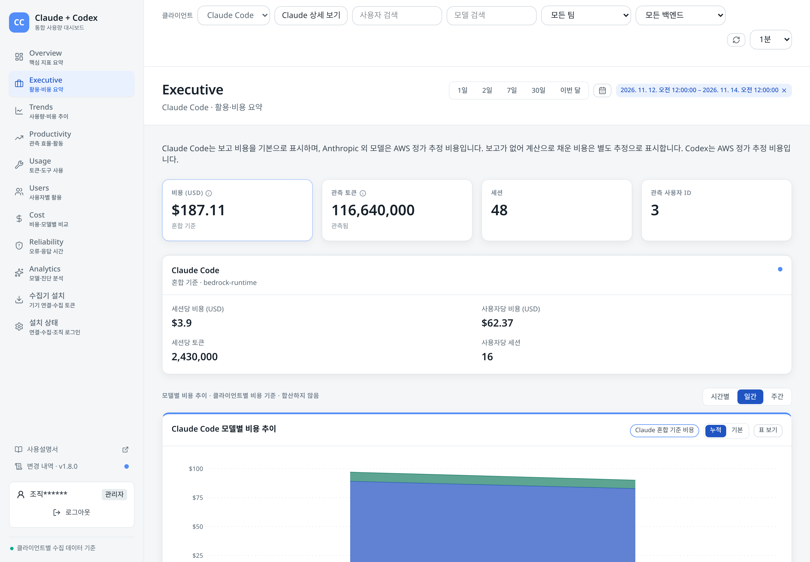
共通ビュー: 総コスト、トークン数、セッション数、ユーザー数を確認します。続いて、クライアント別の単価とアクティビティ、モデル別・ユーザー別のコスト推移、観測されたユーザー／セッションあたりのコストカード、クライアント別セッション数、モデル別コスト／アクティビティのテーブルを確認します。ユーザーIDの件数は従業員数ではありません。
Claude 詳細: チャネルKPIと比較スコアボードを確認してから、ユーザー、アクティビティ、コストの各セクションを見ます。モデルコストを前の同じ長さの期間と比較した後、日次アクティブユーザーとモデル別・ユーザー別のコスト推移を確認します。利用可能な場合、チャネルフィルターで対象を絞り込めます。アクティビティスコアは参考指標であり、妥当性が確認されたパフォーマンス指標ではありません。
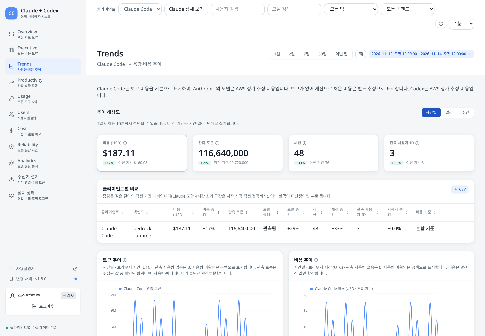
共通ビュー: 現在のコストと使用状況を、同じ長さの直前の適用期間と比較します。その後、クライアント比較、トークンとコストの推移、モデル別・ユーザー別のコスト推移、期間別テーブルを確認します。推移の解像度を選び、時間グラフにマウスポインターを合わせるか、ドラッグします。期間同士を一致させられない場合、直前期間との比較は表示されません。各区間のセッション数は、その区間内で個別に数えた値です。合計しても期間全体の個別セッション数にはなりません。
Claude 詳細: DAU、WAU、MAU、DAU/MAU継続利用率のカードと、アクティブユーザー数および継続利用率のグラフを確認します。これらは観測されたアクティビティであり、成果を測るものではありません。
共通ビュー: 利用可能な場合、トークン経済性のセクションには、コストの計算式、変化の要因、単価とリクエスト効率の推移、モデル別の経済性、観測された成果単位あたりのコスト、対象となるユーザーの例が表示されます。利用するには、インストール環境のセッション・ターンデータが準備されている必要があります。セクションが利用不可でも、値がゼロという意味ではありません。その下には8つのセクションがあります。(1) クライアント概要、(2) 観測されたモデル効率とキャッシュ／推論の比率、(3) アクティビティ、(4) コードの結果、(5) ツール別の権限判断、(6) ツールの結果、(7) 応答と待ち時間、(8) アクティビティ指数の上位ユーザーです。テーブルには、未収集、未集計、未算出の値が示されます。関連する結果には同じ適用期間が使われます。エクスポートする前に、現在の応答が届くまで待ってください。
Claude 詳細: アクティビティ指数の順位とユーザーアクティビティ、ユーザー／セッションとPRの推移、トークン100万個あたりの変更行数とコミット数、追加／削除行数、編集やツールの権限判断、アクティブ時間と言語別の編集、プロンプトあたりのツール呼び出し数、承認待ち時間、最初のトークンまでの時間、インタラクション時間の内訳を確認します。収集されている場合は、追加でアクティビティ密度、権限占有率、ツール結果のテーブルも表示されます。
権限判断には自動承認も含まれ、コードが受け入れられたことを意味しません。Codex では、同じ既定のコード行、コミット、PR、アクティビティ指数の測定値は提供されません。外部の成果データが必要です。これらの観測値や任意のアクティビティ指数があっても、生産性、品質、時間短縮、因果関係のあるROIが証明されるわけではありません。
共通ビュー: トークンの内訳、クライアント別の使用状況比較、トークン構成グラフ、ツール使用状況のテーブルを確認します。入力、キャッシュ読み取り、キャッシュ書き込み、出力の各内訳は二重計上されない形で表示されます。推論は出力の一部です。Codex を選択した場合、Codex 상세 に 도구·승인 (ツールと承認) が含まれ、収集範囲に応じてツールの結果と承認／拒否の情報を確認できます。
Claude 詳細: エントリーポイント、利用可能な場合はプロジェクト、ツール／MCPの結果、権限判断、権限モードの変更と承認元、ツール処理時間、MCPコネクターの使用状況と接続状態、Skillの使用状況と起動タイプ、読み込まれたプラグイン、インタラクションあたりのサブエージェント数、コンテキストの圧縮、スラッシュコマンド、プロンプトの長さ、Hookの処理時間を調べます。対応するイベントが収集されていない場合、カードが空または利用不可になることがあります。任意のプロジェクトフィルターの適用範囲は、操作で説明したとおり限定されています。
共通ビュー: クライアント間で観測されたユーザー数、セッション数、ユーザーあたりのコストを比較し、ユーザーテーブルを使います。同じ識別済みユーザーは、選択したクライアントをまたいでまとめられる場合があります。クライアント別の内訳では、それぞれのコスト基準が維持されます。クライアント別の個別ユーザー数は重複する場合があるため、合計して全体の人数を出すことはできません。識別済みのユーザーを選ぶと詳細が開きます。未識別の行からは詳細を開けません。
詳細ページには、期間の概要と時間グラフ、別途読み込まれる過去90日間のUTC日次セッションヒートマップ、利用可能な場合のクライアント別ツール／権限情報、タスク一覧があります。ヒートマップの日次値は、観測された区間ごとのセッション数であり、個別セッションの合計ではありません。詳細は、親ページと同じ期間が適用されるまで待機します。点を選ぶとタスク一覧が1つの区間に絞り込まれ、ドラッグするとページの期間が変わります。전체 조회 기간의 작업 を使うと、タスク一覧が期間全体に戻ります。詳細を閉じるとテーブルに戻ります。
Claude 詳細: チャネル概要、対象となるユーザーのアクティビティ指数順位、モデルファミリー別のユーザーあたり平均コスト、観測されたユーザーアクティビティ、ユーザー別のツール／Skillテーブルを確認します。ユーザー行を選ぶと詳細とタスクが開きます。ユーザーの観測アクティビティは、個人のパフォーマンス評価ではありません。
Claude 詳細では、別の 사용자 검색 欄で観測アクティビティの行を絞り込めます。ユーザーを開くと、詳細には有効なすべてのクライアントが含まれます。選択した推定チャネルが適用されるのは、Claude関連の領域だけです。
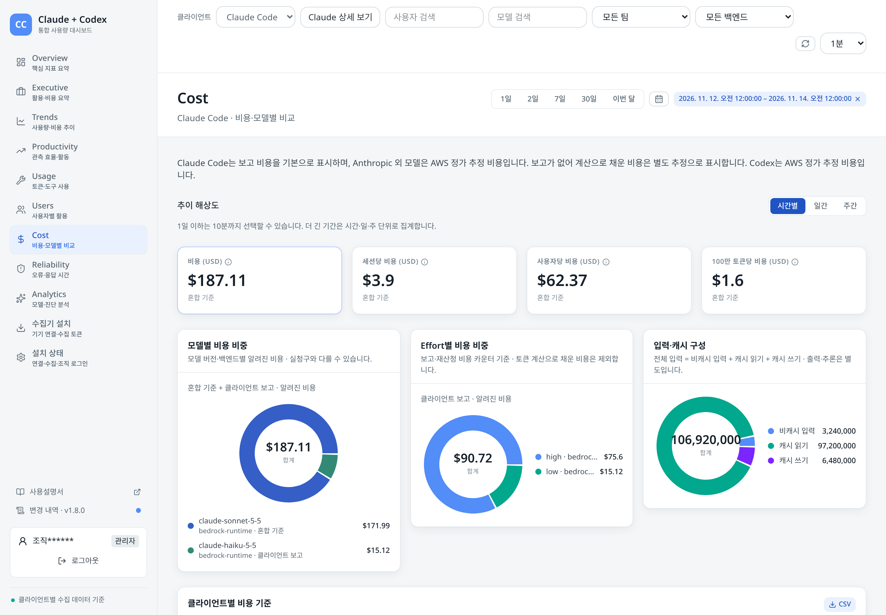
共通ビュー: 合計と単価のカードから確認し、クライアント別モデルとEffortのコスト比率、入力／キャッシュの内訳を見ます。コスト基準、価格不明の記録、全体の推移、モデル別・ユーザー別の推移を比較します。モデルとユーザーのテーブルでモデルまたはユーザーを選ぶと、同じ期間のコスト推移を表示できます。モデル詳細には、既知のモデルコストに対する各ユーザーの割合も表示されます。価格不明の値は除外され、分母が欠落またはゼロの場合は割合がありません。詳細を閉じるか選択を変更すると元に戻ります。利用可能な場合、Codex の 효율·Effort セクションには、記録された完了処理の効率とEffort別の使用量／コストが追加されます。
Claude 詳細: 報告されたコストの合計、比較、予測、Effortとモデルのコスト比率、トークンの内訳、モデル別・ユーザー別の推移、モデル別コスト／トークンのテーブルを確認します。モデルを選ぶと、そのモデルのユーザー別コスト内訳が表示されます。チーム別のコスト分布、使用状況、推移 (チームなしの行を含む)、エージェントコスト、ユーザー／モデルのテーブル、観測された行数またはコミットあたりのコストのテーブルも確認できます。ユーザー上位数は10、20、50、100から選びます。チームへの割り当ては、セッションで報告されたチームに基づき、利用できない場合があります。任意の計算コスト比較 (계산 비용 교차검증) では、診断用の列とグラフが追加されますが、追加料金を意味するものではありません。結論を出す前に、価格、部分データのラベル、前提条件を確認してください。
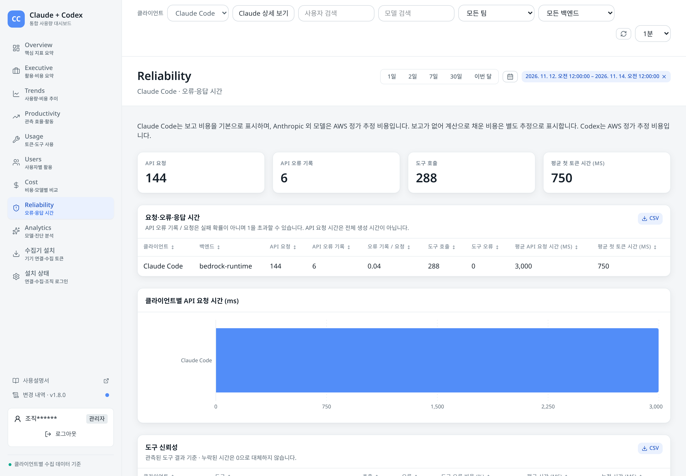
共通ビュー: リクエスト、エラー、ツール呼び出し、最初のトークンまでの時間のカードを確認します。クライアント別のリクエスト／エラー／時間の比較、リクエスト時間グラフ、ツールの信頼性、モデルのリクエスト診断も確認できます。観測されたエラー記録数とリクエスト数の比率は、失敗確率ではなく、1を超える場合があります。Codex を選択すると、성능 に観測されたターン、リクエスト、ツール、起動時の遅延に関する診断情報が追加されます。
Claude 詳細: モデルとEffort別のAPI応答時間分布、拒否応答、再試行回数上限に達したケース、エラー率、ステータスコードを確認します。バージョンセクションでは、報告コストと計算コスト、キャッシュTTLのシナリオ、クライアントバージョンの分布、バージョン群ごとのコストを比較します。コスト差だけでは、その原因は分かりません。
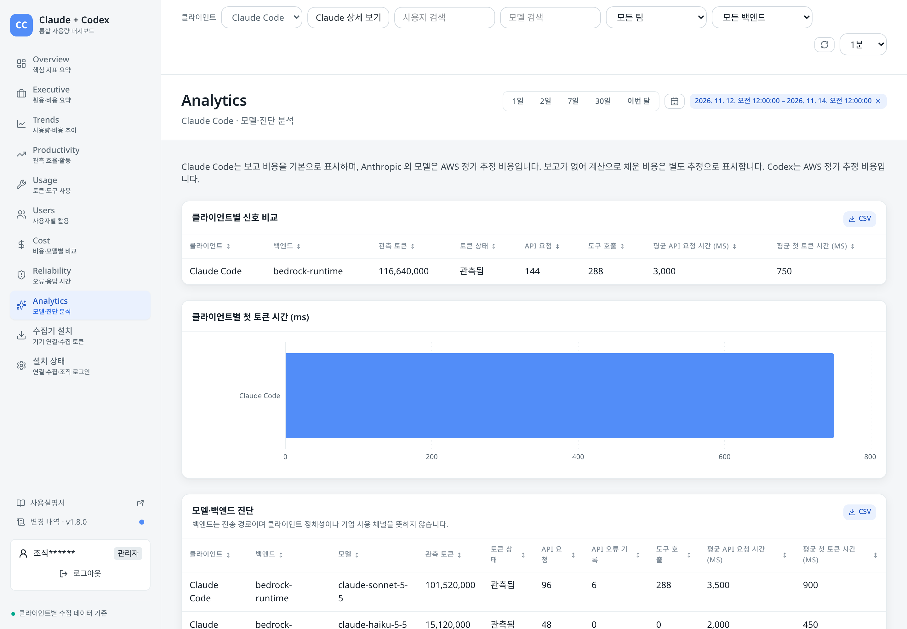
共通ビュー: チャットが許可されている場合は、診断パネルの上にある欄で質問します。その下では、クライアントのシグナルと最初のトークンまでの時間を比較し、モデル／バックエンドの診断、プロジェクトタグの使用状況、観測されたシグナルの網羅性を確認します。プロジェクトタグはクライアントから提供されたもので、請求用プロジェクトではありません。
Codex を選択すると、Codex 상세 に 런타임·메트릭 と Trace が表示されます。前者では、セッション開始時の設定、指標名の検索、収集された指標、イベントの網羅性を確認できます。Trace ではスパンの遅延と、件数に上限のある最近のトレースを表示します。利用可能な場合は、トレースを展開してスパンを調べられます。この診断プレビューは、ユーザーのTask Traceとは別のものです。対象は最新の50件のトレースと、トレース1件あたり最大200件のスパンです。切り詰められたトレースでも最近のスパンは表示されますが、トレース全体の所要時間とエラー合計は表示されません。スパンデータに矛盾がある場合、そのトレースの詳細が表示されないことがあります。指標とトレースは、完了処理の使用量に追加されるものではありません。
Claude 詳細: Analytics は質問と回答のページです。チャットが利用可能であり、権限がある場合に使えます。質問のプリセット、グラフ、制限についてはAIアシスタントを参照してください。
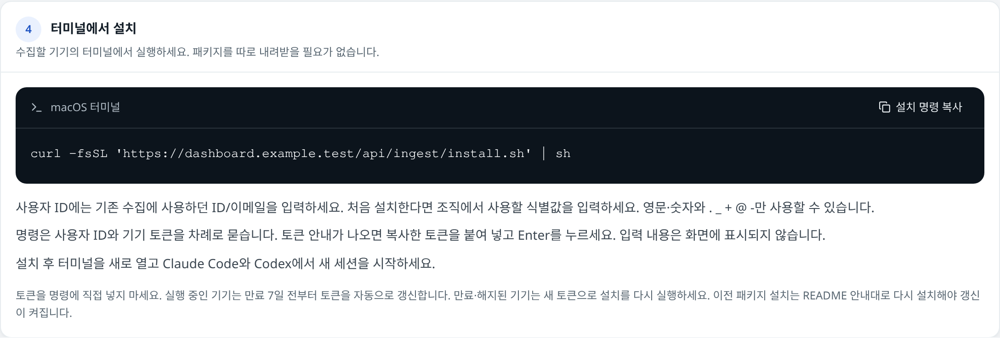
このメニューを利用するには、組織ログインとデバイス管理権限 (通常は analyst または administrator)、およびデバイス取り込み機能の有効化が必要です。サインイン中のユーザー自身のデバイスを管理します。viewer は許可された運用担当者にお問い合わせください。所属組織で承認されたインストール手順に従ってください。
現在のインストーラーで設定されている場合、有効なデバイスは有効期限の7日前から自動更新されます。期限切れまたは失効したデバイスでは、新しいトークンを取得してインストールし直す必要があります。ログアウトしてもデバイスのデータ収集は停止しません。最近データを受信していても、使用状況がすべて収集されたとは限りません。運用担当者向けの詳細は、インストールと運用を参照してください。
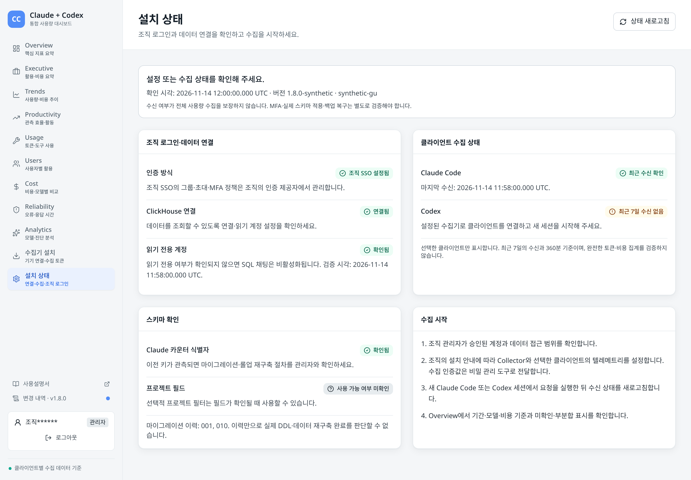
インストール状況の確認権限を持つ管理者は、상태 새로고침 を使って、組織ログインとデータベース接続、読み取り専用アカウントの状態、有効なクライアントの最近のデータ受信、スキーマ確認、データ収集を開始する手順を確認できます。最近のデータ受信、古いデータ、空、利用不可などの状態は、それぞれ別に報告されます。更新に失敗した後、以前の結果が保持されている場合は、画面に警告が表示されます。
確認に成功しても、テレメトリの完全性、実際のマイグレーション、MFA、バックアップからの復元が検証されたことにはなりません。運用担当者がこれらを別途確認する必要があります。プロジェクトフィルターを使うには、プロジェクト項目が確認されている必要があります。運用とアーキテクチャを参照してください。
トレースは任意のため、この一覧には常に一部のタスクしか表示されません。トレースの根拠がないタスクは表示されません。UIでは、90日より前に開始する期間はトレースの保存期間外として扱われます。Codex のタスクはターン単位です。トークン数とコストは、同じ会話および時間区間内の完了ログから紐づけた推定値です。記録を紐づけられない場合や制限がある場合は、その旨が示されます。
タイムラインにはメインレーンと観測されたサブエージェントのレーンが表示されます。同じ種類のエージェントは番号が付けられ、別々の濃淡で表示されます。入力コンテキストが大きいLLM呼び出しほど濃く表示されます。灰色はツール、赤色は権限待ち、点線はサブエージェントの作成を表します。呼び出しまたは他のスパンを選択すると、モデル、タイミング、トークン、コスト、Effort、試行回数、利用可能な属性を確認できます。欠落している値は未収集のままです。Codex では試行回数は提供されません。開始時刻のないスパンはタイムライン上に配置できません。
コストの積み上げ帯には、レーンごとの観測された累積コストが表示されます。ポイントにマウスポインターを合わせると詳細を確認できます。価格不明の区間や紐づいていないCodex完了記録がある場合、コスト履歴は完全ではありません。コンテキストグラフには、観測された呼び出しごとの入力コンテキストと圧縮ポイントが表示されます。グラフ上で呼び出しを選ぶと詳細を確認できます。Codex では、判明している場合にコンテキストウィンドウの使用率が表示されることがあります。Claude では、この画面にウィンドウサイズは報告されません。欠落した呼び出しは省略され、ゼロとしては表示されません。
왜 많이 썼나 (なぜ使用量が多いのか) には、コンテキストの繰り返し、レーンの比率、再試行など、利用可能な観測情報が表示されます。これらは手がかりであり、原因の証明ではありません。모델별 호출 (モデル別の呼び出し) では、行を選択すると該当するLLM呼び出しが強調表示され、再度選択すると解除されます。세션 환경 には、観測されたClaudeセッションのMCPサーバー状態と読み込み済みプラグインが表示されます。呼び出しごとの一覧ではありません。Codex ではこれらのセッションイベントは提供されません。ツール定義の件数とトークンサイズは利用できません。
タスクリンクの操作を使うと、共有リンクをコピーまたは選択できます。リンクにはタスクとその時間範囲が含まれますが、受信者にもダッシュボードへのアクセス権が必要です。許可された相手とだけ共有してください。タスクが見つからない、期限切れ、または一致しない場合、開けないことがあります。詳細には最新の5,000スパンまでという上限があります。データが切り詰められた場合、UIは警告を表示し、KPI行、コスト帯、説明の要約を表示しません。Claude では、タスク全体とレーンの合計も表示されません。不完全なトレースは、他の呼び出しがなかったことの証拠ではありません。オーバーレイを閉じると元に戻ります。共有タスクリンクを閉じると Users に戻ります。
チャットが設定済みで、認証・権限があり、読み取り専用であることが確認されたデータ接続が使える場合は、Ask Claude または Analytics の質問欄を使います。組織ログインでは viewer にチャット権限はありません。analyst と administrator が利用できるかどうかも、デプロイ環境の設定によって異なります。操作欄が見えていても、サービスが利用可能とは限りません。
使用状況について質問を入力して送信するか、例を選びます。Analytics では、例はコスト、採用状況／アクティビティ、ユーザー／ツール、生産性、異常検知のカテゴリに分かれています。会話を開始した後も、例は横長の一覧として利用できます。ほとんどのプリセットでは、選択期間の日数が使われます。直近使用状況のプリセットでは明示的に過去3時間を尋ねます。必要に応じて、質問に正確な時間範囲、クライアント、その他の範囲を指定してください。すべてのダッシュボードフィルターがチャットの質問に適用されるとは限りません。会話で追加質問を行い、回答を基になるダッシュボードとデータ網羅性の通知に照らして確認してください。SQLによる回答では、Codex の完了記録の重複排除と価格設定や、Claude の Anthropic 以外のコストに対する調整が自動的に反映されるとは限りません。合計を比較する前に、対象範囲とコスト基準を確認してください。
フローティングウィンドウはサイズ変更、拡大、元のサイズへの復元、閉じる操作ができます。閉じると処理中の回答は停止しますが、ウィジェットが表示されている間は会話が保持されます。回答には、対応する折れ線グラフまたは棒グラフを最大3つ含めることができます。マウスポインターを合わせると値が表示され、데이터 보기 を開くとグラフのデータテーブルを確認できます。ソース、コスト基準、適用期間、一部データや行数制限のラベルを確認してください。SQL結果のグラフで、データの網羅性が確認されていない場合があります。アシスタントはグラフを出さずに回答することもあります。グラフデータを汎用的に選択したり、グラフをダウンロードしたりする操作はありません。用意されている場合は、ダッシュボードのテーブルにあるCSVボタンを使ってください。質問に秘密情報や機密性の高い個人情報を入力しないでください。
組織ログインモードでは、サイドバーまたはモバイルメニューに、アカウント名とロールが表示されます。名前がマスクされるのは、マスキングが有効な場合だけです。viewer (조회)、analyst (분석)、administrator (관리자) です。ブラウザーセッションを終了するには 로그아웃 を使います。セッションの有効期限が切れた場合は、再度サインインしてください。アクセス権とテレメトリの表示範囲は、所属組織の設定で管理されます。他の認証方式では、画面が異なる場合があります。組織のID、グループへの所属、MFAは、IDプロバイダーで管理されます。
사용설명서 は公開ドキュメントを開きます。변경 내역 は同梱のリリースノートを開き、バージョンごとの概要と、関連する機能、リリース、技術変更履歴へのリンクを表示します。点は、このブラウザーでまだ開いていないリリースがあることを示す場合があります。リリースノートでは変更点を説明し、このガイドでは製品全体を説明します。
| 質問 | 手順 |
|---|---|
| 支出が増えたのはなぜですか？ | クライアントと期間を選びます。Trends を開き、前の期間との比較を確認してから、増加部分をドラッグします。Cost でモデル、Effort、ユーザーの内訳を、それぞれのコスト基準と一部データのラベルとあわせて比較します。モデルまたはユーザーを選ぶと、同じ期間の詳細が表示されます。原因を判断する前に、Reliability とデータ収集の変更を確認してください。 |
| データが欠けていますか？ | クライアント、期間、フィルター、データの新しさ、エラー通知を確認します。Overview と Analytics で、観測されたトークンとコストの網羅性を比較します。許可がある場合はデバイスの受信状況と Installation status を確認します。許可がない場合は運用担当者にお問い合わせください。新しいクライアントセッションを実行して更新します。データを受信したことや合計が正の値であることだけでは、完全性は証明できません。 |
| どの作業に費用がかかりましたか？ | Cost でモデルとユーザーの内訳を確認します。Users を開いて識別済みのユーザーを選び、タスク一覧をコスト順に並べ替えます。行を開いてレーン、呼び出し、コスト帯、コンテキストを確認します。トレース収集が一部のみである可能性、上位20件とClaudeの候補件数の上限、コスト基準を考慮してください。 |
| クライアントとモデルを比較する | 有効なすべてのクライアントを選び、同じ期間を指定して Overview、Usage、Cost を使います。クライアントごとのバックエンド、モデル、観測されたトークンの網羅性、コスト基準を確認します。モデル名からクライアントを推測したり、推定Claudeチャネルをクライアントとして扱ったりしないでください。Cost でモデルを選ぶと、そのモデルを使ったユーザーが表示されます。 |
| デバイスを登録または失効させる | 必要な権限と設定済みのデータ取り込み機能がある場合、コレクターの設定を使って名前付きデバイスを登録し、表示されたトークンを安全にコピーしてインストールし、新しいセッションで確認します。データ収集を停止するには、デバイスを選択して失効を確定します。コレクターの設定を参照してください。 |